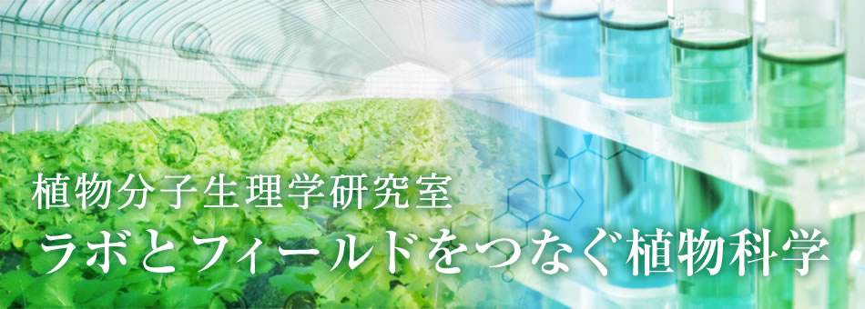

Ritsumeikan University
Plant Molecular Physiology FUKAOLAB
深尾研 ABOUT
研究概要
ミネラルは植物が生育する過程で必須ですが、
多すぎても少なすぎても植物の生育阻害を引き起こします。この為植物は
細胞内のミネラル濃度を一定に保とうとする恒常性維持機構を働かせます。
この時機能する遺伝子やたんぱく質を同定し、
そのメカニズムを研究しています。
また夏場の高温ストレスにも耐性を持ち、
作物の収量を向上させるための研究にも携わっております。

研究テーマ1
高温ストレスによるイネの白未熟粒発生機構の解明と発生予測シミュレーション
イネは出穂後に高温に曝されると白未熟粒が発生します。
白未熟粒は、胚乳内におけるデンプン粒の蓄積が不十分なために、
デンプン粒の間にできた隙間に光が乱反射することで
白濁して見える現象のことを言います。
白未熟粒の発生は、特に出穂後の20日間の気温が重要であり、
胚乳の登熟初期に日平均気温が27℃を超えると
光合成能力の低下により白未熟粒が多く発生します。
また夜間の高温は、稲の呼吸作用を増加させ、日中に生産したデンプンが
消費されることも白未熟粒発生の原因になります。
我々はコメの白未熟粒発生機構の解明と、発生を予測するシミュレーション法の
開発に取り組んでいます。なお、本研究は新潟県農業総合研究所との
共同研究により行っています。
研究テーマ2
夏季にホウレンソウを栽培するための農法の確立
近年の地球温暖化により、夏場に生育可能な作物種が限定されています。
このため我々は、作物への高温ストレスを緩和することで
継続的に作物を生育するための農法について研究をしています。
ホウレンソウは、通常秋から春にかけて生育される葉物野菜であり、
夏季においては高温のために生育障害を受けます
特にビニールハウス内の気温は真夏においては50℃近くに達することもあり、
発芽や生育を大きく阻害します。
我々は、生産者の方々が所有されている既存のビニールハウスを使って、
夏季にホウレンソウ栽培することに成功しています。
またホウレンソウにはルテインというカロテノイドの一種が
多量（0.1 mg／100g以上）に含まれています。
ルテインは、目の視細胞が最も集まっている黄斑部分に存在しており、
強い抗酸化作用をもっています。
しかし人はルテインを自分自身で合成することができないため、
日々の食事やサプリメントとから摂取しないと減少していきます。
ルテインは高齢者の黄斑化を防ぐ物質として着目され、
研究が進められてきましたが近年はスマートフォンやPC等の長時間使用により
若年者における目のトラブル解消にも役立つことが期待されています。我々は、
ルテインを高蓄積するホウレンソウの栽培条件を調べる研究もしています。
研究テーマ3
接ぎ木成立の分子メカニズム解明
接ぎ木は、園芸作物の栽培技術として日本で発展してきました。
接ぎ木とは2種類の植物をつなげる技術のことを言います。
例えば、病気に弱いけどおいしい作物と、病気には強いけど
おいしくない作物を接ぎ木することで、
病気に強くておいしい作物を作りたい場合に用いられます。
この時根を張る側の土台となる植物を台木、実がなる地上部を穂木と呼びます。
接ぎ木は農業現場において頻繁に用いられていますが、
なぜ台木と穂木が接着し、実がなるのか？
といった単純な疑問はほとんど明らかにされていません。
我々はこのメカニズムを分子レベルで解明しようと試みています。
PAGE TOP